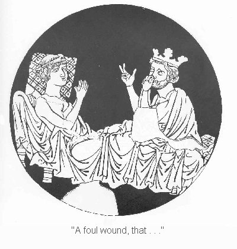

Now, let me see, where was I?
When Tristan again set foot on shore,
without either horse or lance,
a crowd of thousands quickly gathered,
all pressing to give him greetings,
some mounted, some on foot.
They gave him a happy reception.
Neither the king nor his kingdom
had known so joyous a day before,
and with good reason, you may be sure,
for on this day had come to them
high repute by his hand.
Their suffering and humiliation
he had ended, he alone.
As to the wounds that he bore,
they regretted them deeply,
with the most sincere concern.
However, they supposed
that he would soon recover
from afflictions such as these, 7250
and therefore thought little of them,
conducting him back to the palace
and receiving him there among them.
First they relieved him of his armor
and gently provided him such comforts
as he or others there suggested.
Then physicians were summoned,
the most skillful to be found
in the castles or in the land.
To what avail? They came as called,
they exercised all their knowledge
with medicinal administrations.
But what did it all accomplish?
Nothing toward his recovery.
The sum of what they all knew
of the healing sciences
could do him no good whatever.
The venom was so confected
that by no means were they able
to cleanse it from the wound.
His vitality began so to ebb
that his coloration changed
in an alarming way—
you would hardly have recognized him.

In addition, the horrible cut
gave off now so foul a smell
that his life seemed not worth living,
his body disgusting to himself.
But his distress was even greater
to see plainly, all along,
how this had begun to offend
those who had been his friends.
More and more, he understood
Morolt's curse. In addition,
he had heard, as common knowledge,
how lovely and accomplished
Isolt his sister was.
All this was legendary
in lands for miles around
wherever her name was known—
Isolt the Wise, Isolt the Lovely,
shining brightly as the dawn.
Tristan, in great difficulty,
could not get this out of his mind,
and finally knew: if he should live,
it could be by no other means
than through her artifice alone,
she who knew these operations,
this queen of secret remedies.
But how that could be brought about-- 7300
he could see no way to do it.
But then he started to think it through.
Being as good as dead already,
what difference did it make to him?
To risk a life already lost
was better than this living death.
With this line of reasoning
he resolved firmly to chance it,
whatever outcome God should will—
to survive if he be so destined.
He summoned his uncle to his bedside,
and told him the entire story,
the wound's secret and his intention,
as friend confides in friend—
what he had decided
based on what Morolt had told him.
Marke was both pleased and troubled.
One must endure Inescapable harm
as best one can endure it—
a man must choose between two evils
whichever one seems the lesser,
as the useful axiom prescribes.
And so the two of them agreed
on all the eventualities,
just as it then came to pass:
how to arrange for the voyage,
the need to keep the secret
that he was bound for Irlant,
how it should be put about
that he had gone to Salerno
for restoration of his health.
When these matters had been settled,
they sent for the mentor Curvenal.
To him they revealed in confidence
what they wanted and intended.
Curvenal was in agreement
and declared himself willing and ready
to die with him or see it through.
Now as evening began to fall,
a vessel, carrying a small skiff,
was fitted out for the voyage,
including all necessary stores
such as victuals and supplies
and other seafaring gear.
Tristan in his distress
was taken aboard with much lamenting,
but attracting as little attention as possible
so that their embarkation
was known to no one except those
who were directly involved in the task. 7350
To his uncle Marke
Tristan commended fervently
his affairs and his retinue,
lest any of these, though not many
should chance to be dispersed
until they should receive
some certain report of him
and how he had fared.
Then he asked for his harp.
He took it with him when he left,
alone among his other possessions.
Thereupon they put out to sea.
In setting out they had with them
a crew of only eight sailors,
each of whom had solemnly pledged
his life as security
and also sworn before God
never to depart an inch
from the orders their two captains gave.
Marke, having seen them off,
looked long after Tristan.
All his joy and peace of mind
now was small, that I know.
This was a parting that penetrated
into his very heart and bones.
Nevertheless, for both of them
the outcome would be joyful.
Now, when the populace learned
with what debilities
Tristan had departed
to find relief at Salerno,
had he been their own child,
they would hardly have felt distress
more deeply than they did for him,
and all the more so inasmuch
as the injury he had suffered
was sustained in service to them.
Now Tristan drove the ship onward
to the limit of his strength,
sailing both day and night,
on a course straight for Irlant,
as his master mariner
knew expertly to lay.
And as the ship began to near
the coast and harbors of Irlant
and they made good landfall,
Tristan ordered his helmsman
to steer for the capital,
the harbor of Develin,
for there, as he well knew, 7400
was where the cunning queen
exercised her rule.
The helmsman was quick to do so,
and as he made his approach
close enough to be sure,
he informed Tristan: I see the town--
there she is. Your orders, captain?
In reply, Tristan commanded,
We'll lie off here for awhile,
spend at least the evening,
and perhaps also part of the night.
So then they let go the anchor
and rested during the twilight.
When complete darkness fell,
he ordered a closer approach to land.
Thereupon they weighed anchor,
and having felt their way so near
that they could see the town's outline,
but with still a half mile of offing,
Tristan ordered his men to bring him
the most miserable clothing
that could be found on board.
They dressed him in these rags, and then
he had them lay him in the skiff
and launch it from the ship.
He also had his harp put in
and food and supplies enough
on which he might subsist
for three days or four.
Quickly enough all this was done,
just as he directed.
He commissioned Curvenal
and all the crew with him:
Curvenal, my friend,
he said,
take charge of the boat and men,
oversee them well for me,
in every hour and every day.
And when you have arrived at home,
pay them off in such a fashion
that they understand the need to preserve
the secret of our expedition
and say nothing of it to anyone.
Now make for home, with all speed.
Give my greetings to my uncle
and tell him that I still live, at least,
and may well, if God grant it,
yet live on, and even prevail.
Say he shall not grieve for me.
And assure him furthermore,
I will return within the year 7450
if in fact I shall survive.
If I attain what I came for,
he will learn of that at once.
But in court and before the general public
say that because of my weakened state
I died on our voyage, while underway.
By no means let the few loyal men
I still have there be dispersed.
See that they wait for my return
at least until the year's deadline
that I mentioned a moment ago.
But if, as destiny may determine,
fortune does not smile on me
within this space of a year,
then you may give me up for lost.
Leave my soul to God for care
and look again to your own affairs.
Bring my men together and take them
back home to Parmenie.
Settle there with Rual my father,
and request of him on my behalf
to recompense my faith and loyalty
by showing his own to you
and treating you generously
with all his innate excellence.
Charge him also with one more duty:
that he fulfill this request of mine
as to those who have served me
and done my bidding all along:
let him thank and reward them each
according to the service rendered.
Now, my beloved fellows,
he said,
it's time to part, under God's care.
Set your course and leave me adrift.
I, in this extremity,
must seek only the grace of God.
This is the time for you to leave,
to preserve your own lives and safety.
It will very soon be light.
So they turned back, with many laments,
and many a heavy sorrow.
Tearfully they left him there
alone, adrift on the wild sea.
So bitter a parting they had never known.
Every stout-hearted companion
who ever gained a loyal friend
and knows what one of those is worth
will understand very well
how it hurt Curvenal.
But heavy of heart as he was 7500
and beset with a troubled mind,
he put about and sailed away.
Tristan was left there all alone.
He drifted about, here and there,
in much trouble and misery
until the first light of dawn.
When the residents of Develin
first sighted the boat, adrift,
unpiloted, amid the waves,
they quickly sent out a crew
to investigate this mystery.
When the men commissioned for this task
drew nearer to the vessel
but as yet saw no one in it,
they were much surprised to hear
the sweet sound of harp music,
such as set the heart yearning,
and with the strings a voice,
a man singing so pleasingly
that they took it as a sign to them
of some strange adventure,
and remained where they were
as long as harp and voice continued.
(But the momentary pleasure
they had felt was soon over,
since what he had performed for them
merely with his hands and voice
didn't come from deep within him.
He hadn't put his heart in it.
Such is music that it cannot have
any real lasting effect
if you don't put your heart into it.
However common it may be,
that superficial kind of playing
done without heart or meaning
isn't worth the name of Music.
If mere Youth compelled Tristan
to divert her with a tune
performed with voice and hand
by means of harp and song,
she would only be the victim
of unpleasant suffering.)
When his playing had ended,
the crew got under way again
and coming up with the skiff
looked inside, ready for anything.
Then presented with the sight
of a being so miserable
and apparently in such straits,
they were hardly ready to accept 7550
that he could have done such magic
with only his hands and his voice.
But still they greeted him courteously
as one who deserves courtesy
for his song and skillful playing,
and earnestly inquired of him
to tell them of his adventures,
and what had befallen him.
Indeed, I'll tell you all,
said Tristan.
I was a minstrel at court,
and very well versed
in matters and manners courtly—
when to speak, and when not,
to play the lyre and viols,
also the harp and rote,
how to jest and scoff—
I was good at all of this,
as one of such station must be.
So good, in fact, that prosperity
led me on beyond my depth.
I desired greater things
than it was my right to have.
But trying to deal in trade goods
betrayed me altogether.
I had taken as a partner
a fine, successful merchant,
and the two of us provisioned a ship
with everything we thought needed—
this was there at home, in Spanje—
and then set out for Britanje.
But once we got out to sea
a shipload of brigands attacked us
and made off with everything,
having first killed my partner
and whatever else lived or moved.
And how did I alone escape,
with this wound, as you see?
It was the harp that did the trick.
They looked at it, all of them,
while I swore that I was only
a poor, traveling musician.
I managed to get them to give me
this little boat you see me in
and just enough provisions
to keep me alive until now.
Since that time I've been adrift,
sore wounded and much distressed,
a good forty days and nights—
wherever the winds drove me,
or the wild swells carried me, 7600
first one way, then another,
so I have no idea, where I am,
or even less, where I'm headed.
Now be so kind, gentlemen—
our gentle Saviour reward you for it—
bring me back among mankind!
Good friend,
replied one of them,
your fine voice and sweet playing
will serve you now in good stead.
You need no longer drift about
helpless and without direction.
Whatever it was that brought you here,
whether God or water or wind,
we'll take you back to civilization.
As good as their word, they took him,
boat an all, with everything in it,
straight to the city, as he had asked.
they moored his boat at the landing
and addressed him: minstrel, sir,
look carefully at this high fortress
and the beautiful city below it.
Do you know what city this is?
Sir, I do not,
he said. What is it?
Then let us tell you, that you are now
at the city of Develin, in Irlant.
The Savior be praised,
exclaimed Tristan,
that at last I'm among people again!
For surely among them there is one
who will kindly act in my favor
and provide me with advice and help.
His rescuers then went up ahead
and began telling everyone
about this strange occurrence,
causing great astonishment.
They spread the story far and wide
of their remarkable encounter,
a strange adventure with a man
who by his appearance hardly seemed
in any way marvelous.
They related what had happened—
how they had approached the skiff,
and perceived, coming from it,
the sound of sweet harp playing
and with the sound of strings a song,
such as God might gladly have heard
among his heavenly choirs.
In that boat, they declared,
they had found a poor victim,
a mortally wounded minstrel.
Go down there, see for yourselves— 7650
he'll surely die in a day or two.
Yet even in his misery
he has such a lively spirit.
Not in all the kingdoms
will you anywhere find a heart
so little troubled or downcast
by misfortune so grievous.
The townspeople went to see him
and in long conversations
talked about various things,
asking him all sorts of questions.
But to each of these inquiries
he replied with the same description
as he had earlier given his rescuers.
Then they asked him to play the harp.
He responded to their request
with all his talent and sincerity,
and now he put his heart into it.
Anything he could possibly do
with his voice or fingering
that might help gain their sympathy,
that he did, as best he could.
When this wretched casualty
despite his physical condition
touched the harp and began a song
of fascinating beauty,
all who heard it felt for him.
They had the poor unfortunate
lifted from his boat and taken
to the home of a physician,
whom they persuaded to take him in.
Whatever his needs might be,
the doctor should fulfill them,
and all at their own expense
afford him help and comfort.
This was agreed upon and done.
But after the doctor had accepted him
and seen to his every need,
according to the highest
and best of the skills he knew,
all this availed nothing.
Quickly the story spread everywhere
throughout the city of Develin.
Crowds began to come and go,
all lamenting his cruel fate.
Eventually a certain visitor
chanced to come, this time a priest.
He noted Tristan's skills
displayed by fingers and voice,
for he himself was versed 7700
in arts and artifices,
knowing the skill of fingering
all the various instruments,
and spoke many a foreign tongue.
Having spent his days in learning
gentle skills and practicing
the accomplishments of courtliness,
he now was the queen's tutor,
serving in her retinue,
and from her childhood on
had sharpened her royal wits
with many a good precept.
Many an exotic trick
she had learned from him.
Now he likewise taught
the queen's daughter, Isolt,
a girl so ideal
that all the world talks of her,
as does also this, my poem.
She being her only daughter,
the queen had paid every concern
to her alone, since the day
she first could learn any skills
with her fingers or voice.
So did the priest have charge of her,
tutoring her from the beginning
both in letters and music.
When he recognized in Tristan
unusual skills and capacities,
he was so moved to sympathy
and most sincere compassion
that he at once took action.
He went from there straight to the queen
and told her that a minstrel
was present in the city,
a very misfortunate man,
dead in a living body.
Yet never a man born of woman
had such a wealth of skills
or a mind as clear and cheerful.
Oh, noble queen,
he exclaimed,
were there but some way—
could we but find a plan,
a place to have him brought
where you could properly attend
and see this marvel yourself—
how a dying man
can play the harp and sing
with such touching beauty,
and all the while, for his condition 7750
there can be no help nor healing.
By no means can he live.
His host, an expert physician,
who until now has cared for him,
has given up further treatment,
having attained no improvement
by any means whatever.
Well,
mused the queen, thoughtfully,
I'll instruct the chamberlain,
if this man is strong enough
to tolerate being handled,
and can walk at all with assistance,
that he be brought up here to us,
to see if any ministration
may bring some improvement,
or if there's anything to cure him.
This was done as she had ordered.